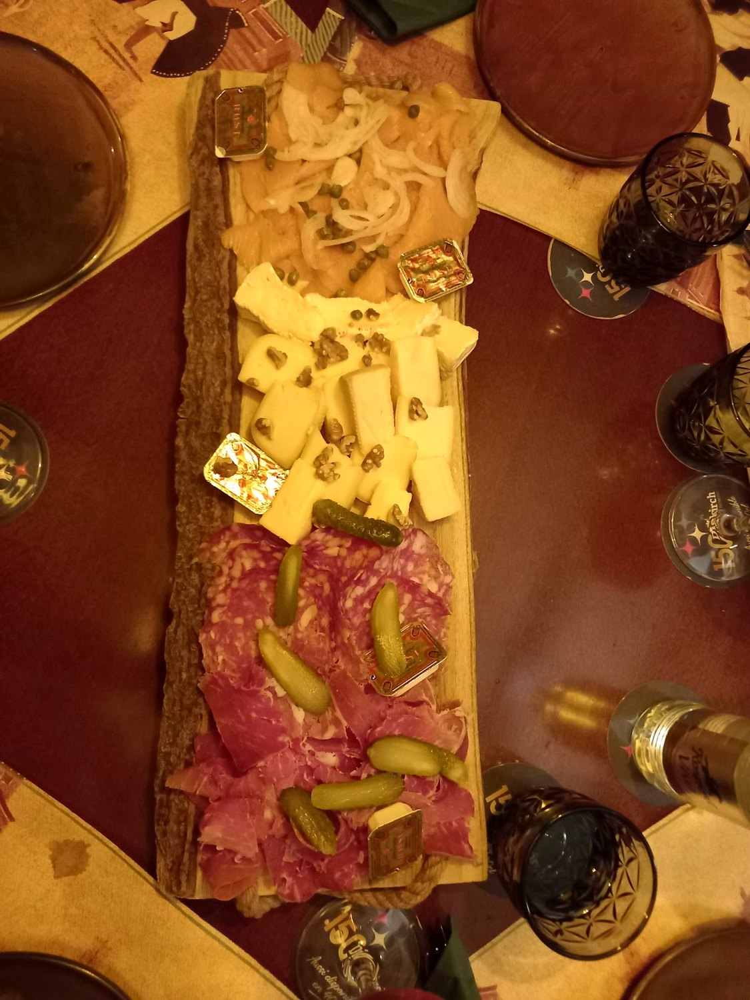
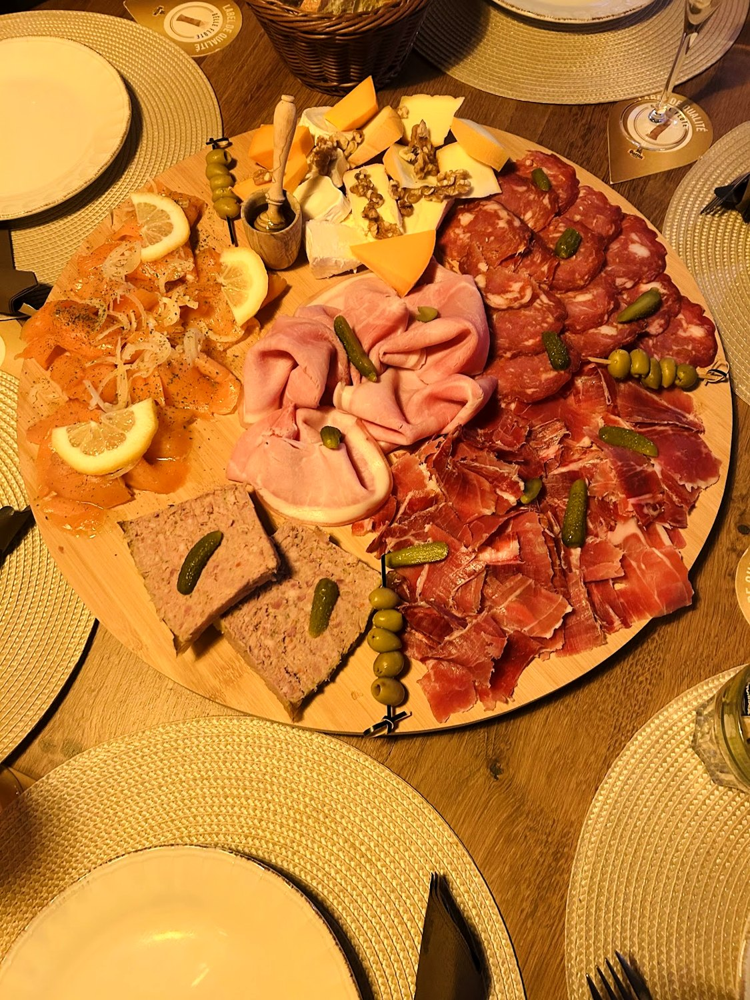
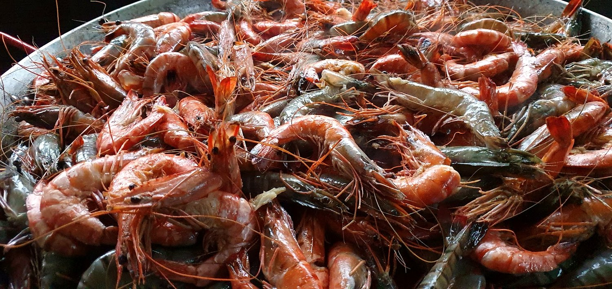
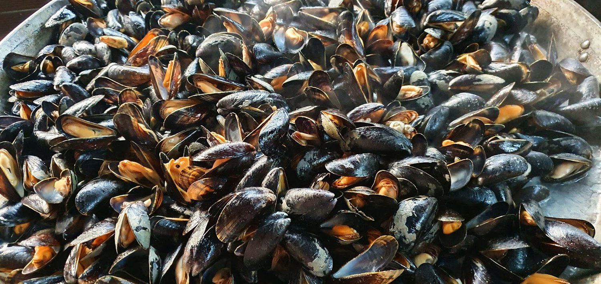
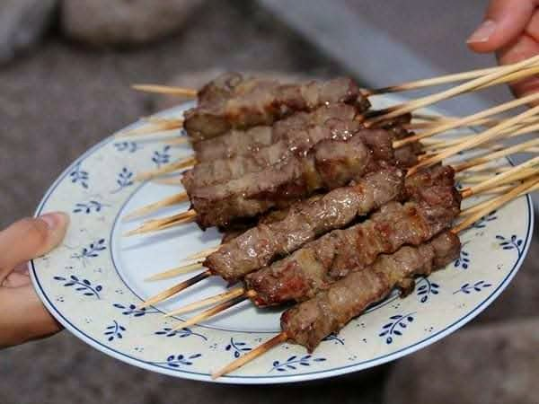
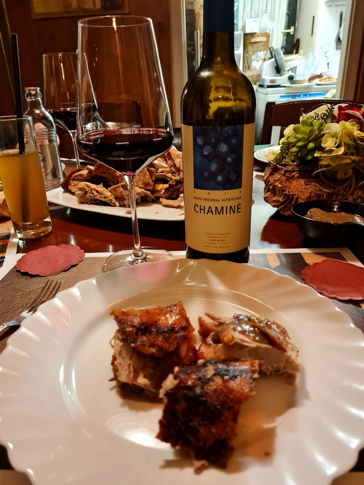
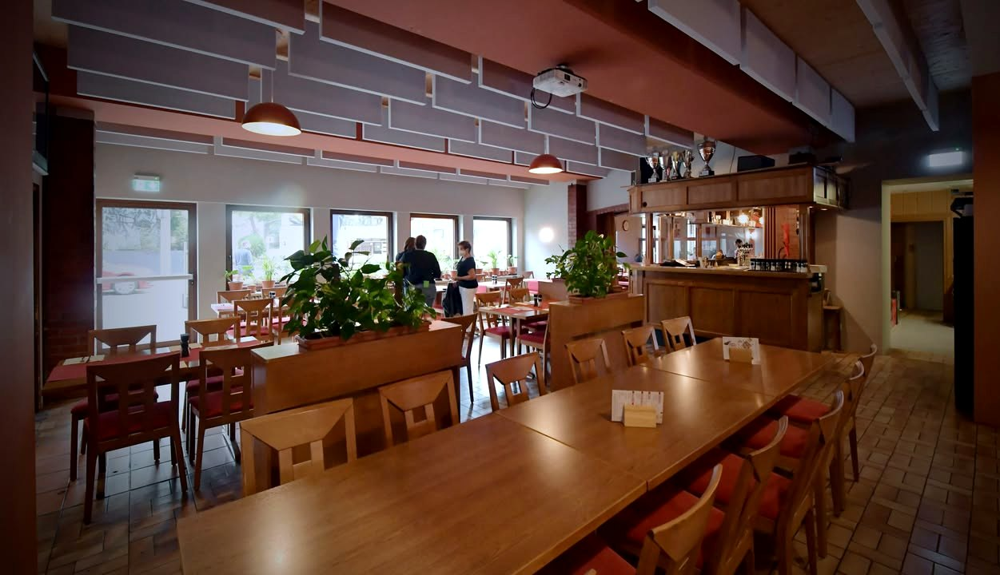
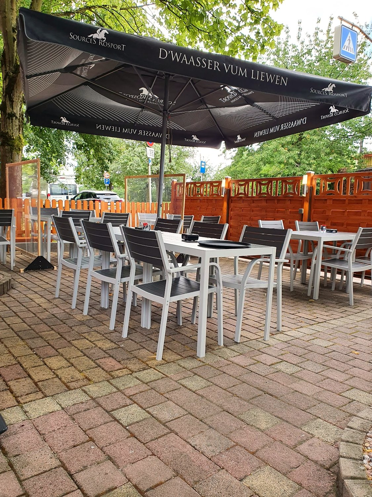
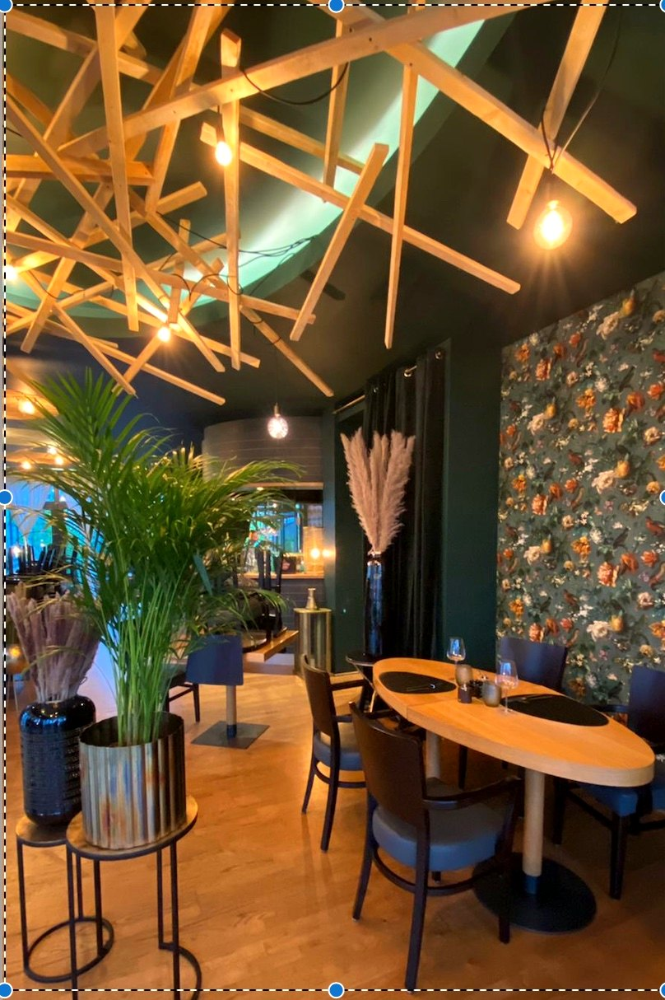
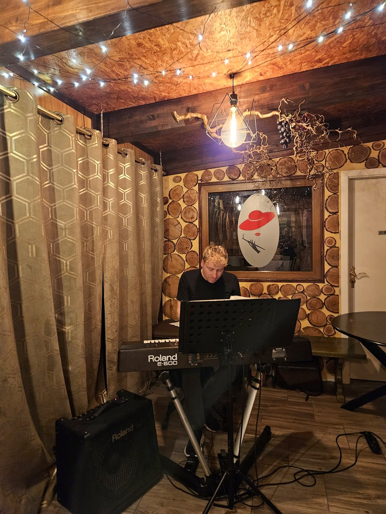

Au Tire-Bouchon
On débouche une bonne bouteille, on dresse une planche, et on partage — jusque tard dans la soirée.
La planche,à partager.
Charcuterie, fromages, cornichons et olives sur une grande planche — posée au milieu de la table, une bouteille débouchée à côté.
C'est l'idée de la maison : on ne commande pas chacun son plat, on partage. Une planche généreuse, un bon verre, et la soirée s'étire. Fruits de mer, gambas grillées et moules quand c'est la saison.

À partagerGénéreux, sans façon
Planches de charcuterie, montagnes de gambas, moules, brochettes grillées — la cuisine de brasserie qu'on partage, un verre à la main.






Un verre,une planche.
Le nom le dit : ici on débouche. Un rouge qui tient, un blanc frais, une planche au milieu — et le coin salon qui invite à rester. Le bar de quartier où l'on prend son temps.

Et certains soirs,ça joue.
La salle du fond, ses murs de pierre et ses guirlandes : de la musique certains soirs, un verre qui traîne, et l'on reste tard.
Programmation musicale à confirmer avec la maison.

Ce qu'on partage
Des planches, des fruits de mer, les classiques de brasserie — et une carte des vins pour aller avec.
Les planches
La mer
Le grill
La cave
Plats d'après les photos publiques de la maison, à titre indicatif. Aucun prix n'est publié : la carte et les prix sont à confirmer sur place.
Nous trouver
L-3920 Mondercange
Ouvert en soirée · horaires à confirmer